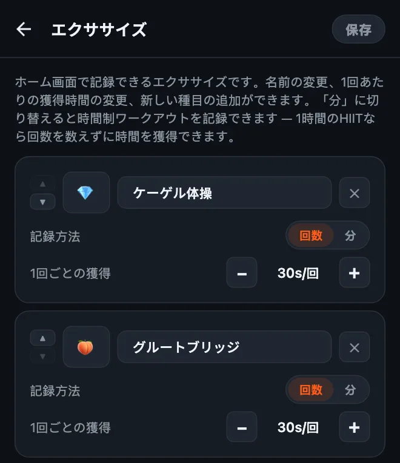
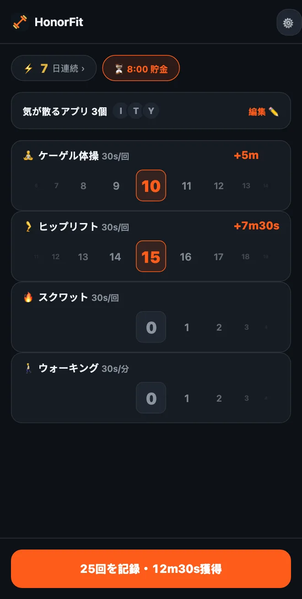

ケーゲル体操でスマホのロックを解除する
どうも！HonorFitを作ったのは、自分とInstagramのあいだに腕立て伏せを挟みたかったからです。それも、カメラに回数を数えてもらうためにスマホを立てかけたりせずに（ガソリンスタンドでそれをやったのは、正直あまりいい思い出ではありません（笑））。回数をこなして、自分で記録すれば、アプリのロックが解除されます。
とはいえ、腕立て伏せが合わない人もいます。それに、このアイデアにいちばん合っているのは、実は腕立て伏せではないのかもしれません。ケーゲル体操とヒップリフトです。その理由と、設定のしかたを紹介します。
ケーゲル体操が自己申告制にぴったりな理由
ケーゲル体操は誰にも見えません。電車で隣に座っている人にも、職場の同僚にも、もちろんスマホのカメラにも。カメラで回数を数えるアプリでは、そもそも数えようがないんです。
HonorFitは数えようとしません。自己申告制なので、やった回数のところまでホイールを回せば終わりです。だから会議中でも、スーパーのレジ待ちでも、ソファの上でも、誰にも気づかれずにTikTokの時間を稼げます。
それに、ケーゲル体操についてよく聞く「やったほうがいいのはわかってるけど、つい忘れちゃう」という問題も解決します。1日に何度もスマホに手が伸びるなら（責めているわけじゃありません、僕もそうです）、そのたびにリマインダーになってくれます。
ヒップリフトは見えないわけではありませんが、床の上やベッドの上でも簡単にできて、道具もいらず、ケーゲル体操との相性もいいです。
設定のしかた
バージョン1.15.0から、これは無料でできます。Proなしでも自分のエクササイズを3つまで追加でき、ケーゲル体操もヒップリフト（アプリでは「グルートブリッジ」）もワンタップで追加できる候補に入っています（Proは米国では月額3ドルまたは買い切り19.99ドルで、無制限に追加できます。価格は国や通貨によって違い、ストアにはお住まいの地域の価格が表示されます）。手順はこうです。
- ホーム画面の歯車をタップして、エクササイズカードを開きます。
- 候補のケーゲル体操をタップし、続けてグルートブリッジをタップします。入力は不要で、絵文字も最初からついています。ケーゲル体操は💎、ヒップリフトは、そう、🍑です。
- −/+ボタンで1回ごとの獲得を設定します（おすすめの値は下にあります）。
- 使わないエクササイズを✕で削除して（懸垂とか？）、保存をタップします。

時間制ワークアウトも含めた編集画面の詳しい使い方は、HonorFitのエクササイズをカスタマイズする方法にまとめています。
1回あたり、どれくらいのスクリーンタイムにする？
僕ならこのあたりから始めます。
| エクササイズ | 1回ごとの獲得 | 1セットの目安 |
|---|---|---|
| 💎 ケーゲル体操 | 30秒 | 10回 = 5分 |
| 🍑 ヒップリフト | 30秒 | 15回 = 7分30秒 |
| 🚶 ウォーキング（時間制） | 1分ごとに30秒 | 20分歩く = 10分 |
ケーゲル体操10回とヒップリフト15回で、だいたい12分半です。ここから調整してください。時間が簡単に貯まりすぎるなら、値を下げましょう。やっていない回数を記録してしまうようなら、値段が高すぎるということなので、値段を下げて（1回の価値を上げて）ください。

ケーゲル体操について1つだけ：多ければいいわけではありません。MedlinePlusやCleveland Clinic（どちらも英語のサイトです）といった健康情報サイトでは、だいたい1セット10回前後を1日に数回、という説明が一般的で、やりすぎると筋肉が緊張しすぎることがあるとも書かれています。なので、YouTube 1時間のためにケーゲル体操100回、みたいな使い方はやめてくださいね！ケーゲル体操には1回あたりそこそこの値をつけて、まとまった時間はヒップリフトやスクワット、ウォーキングで稼ぐのがいいと思うのは、そのためです。
基本のやり方
僕はアプリ開発者で、トレーナーでも理学療法士でもないので、ここに書くのはあくまで大まかなイメージです。ちゃんとしたやり方は、上のリンク先を見てください。
- ケーゲル体操：おしっこを我慢するときに使う筋肉をぎゅっと締めて数秒キープし、そのあと数秒しっかり力を抜きます。これで1回です。呼吸は止めずに、お腹や太もも、お尻には力を入れないようにしましょう。（おしっこを途中で止めるのは、筋肉の場所を一度確かめるための方法で、普段の練習としてやるものではありません。）
- ヒップリフト：仰向けに寝て膝を曲げ、足の裏を床につけます。お尻を締めて、肩から膝までが一直線になるまで腰を持ち上げ、少し止めてから、ゆっくり下ろします。これで1回です。いちばん上でケーゲル体操を組み合わせる人もいます。
妊娠中・産後の方、骨盤まわりに痛みがある方、ケーゲル体操をすると痛む方は、まず医師か、骨盤底筋を専門とする理学療法士に相談してください。自分の体に合ったやり方を教えてもらえますし、「今はケーゲル体操はやめておきましょう」と言われることもあります。それで大丈夫です。その場合は、すすめられた運動でHonorFitを設定すればOKです。
ちょっとしたコツ
- エクササイズは3〜4つに。ケーゲル体操、ヒップリフト、スクワット、ウォーキングくらいにしておけば、座っているとき、寝転んでいるとき、出かけているとき、どれもカバーできます。エクササイズごとにホイールが出るので、少ないほうが使いやすいです。
- 外に出た日は時間制ワークアウトを。エクササイズを分に切り替えれば（またはウォーキングやヨガの候補をタップすれば）、散歩やヨガのクラスでも時間を稼げます。
- 保存したルーティン（Pro、設定でオンにします）を使うと、「ケーゲル体操10回＋ヒップリフト15回」のような回数の組み合わせを3つまで保存して、ワンタップで適用できます。
- ブロックするのは全部ではなく、1つか2つに。夜の時間を食いつぶしているアプリだけで十分です。
ケーゲル体操も合わない、という人のために、体にやさしい、デスクでもできるエクササイズの記事も書きました。
HonorFit Blockerは、iPhoneとAndroid向けの無料アプリブロッカーです。自己申告制で、カメラは使わず、データはスマホの外に出ません。ケーゲル体操、ヒップリフト、そして自分のエクササイズ3つまでは無料です。気に入ってくれる人がいたらうれしいです！